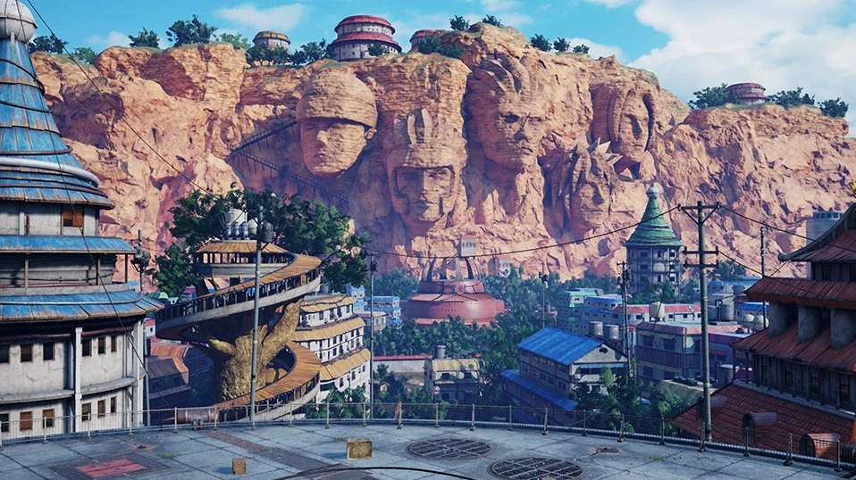
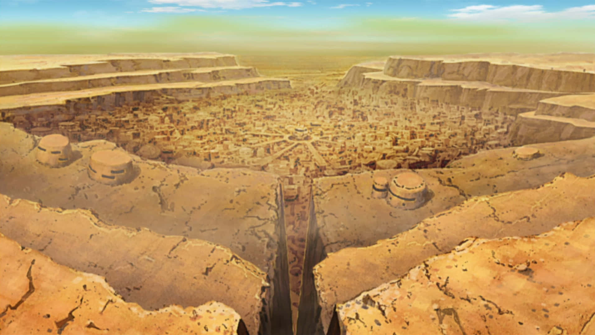
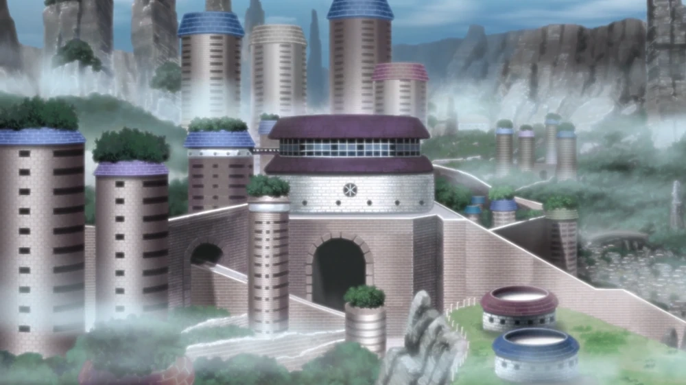
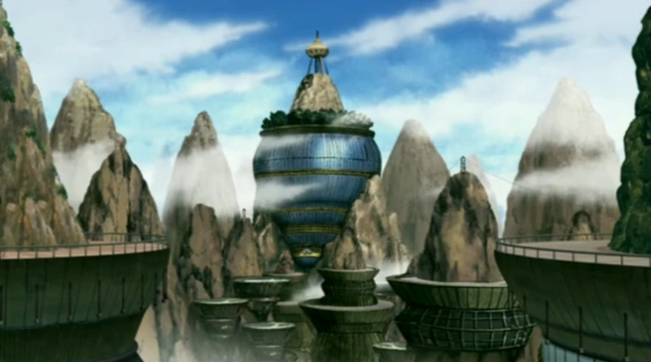
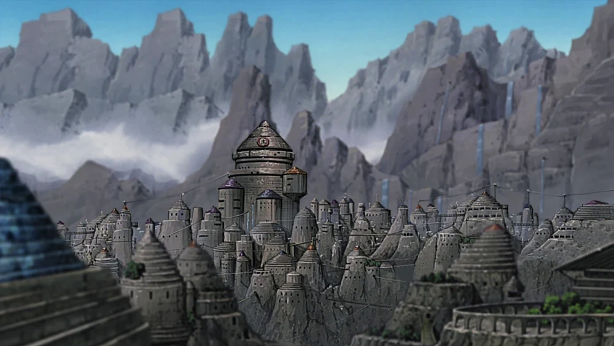

Aldea Oculta de la Hoja (Konohagakure)
Ubicada en el País del Fuego, es una de las aldeas más poderosas y con más historia. Hogar de muchos ninjas legendarios como Naruto, Kakashi y los Uchiha. Representada por una hoja en espiral, destaca por su equilibrio entre poder militar y valores de paz.
Aldea Oculta de la Arena (Sunagakure)
Situada en el árido País del Viento, es conocida por su fuerte defensa y el uso de técnicas basadas en la arena. Gaara, uno de sus más reconocidos líderes, transformó la aldea en un lugar más justo y fuerte.
Aldea Oculta de la Niebla (Kirigakure)
Ubicada en el País del Agua. En el pasado fue conocida como la "Aldea de la Niebla Sangrienta" por su brutal sistema de graduación ninja. Tras ser reformada por Mei Terumī, se volvió una aldea más pacífica y cooperativa.
Aldea Oculta de la Nube (Kumogakure)
Una aldea montañosa del País del Rayo. Reconocida por su poder militar y sus usuarios del elemento rayo. Killer Bee y el Cuarto Raikage son sus figuras más destacadas, conocidos por su fuerza física y velocidad.
Aldea Oculta de la Roca (Iwagakure)
Localizada en el País de la Tierra, es famosa por su uso del Elemento Lava y Técnicas de Tierra. Aunque fue una aldea dura y beligerante, su participación en la Gran Guerra Ninja mostró su lado más cooperativo.